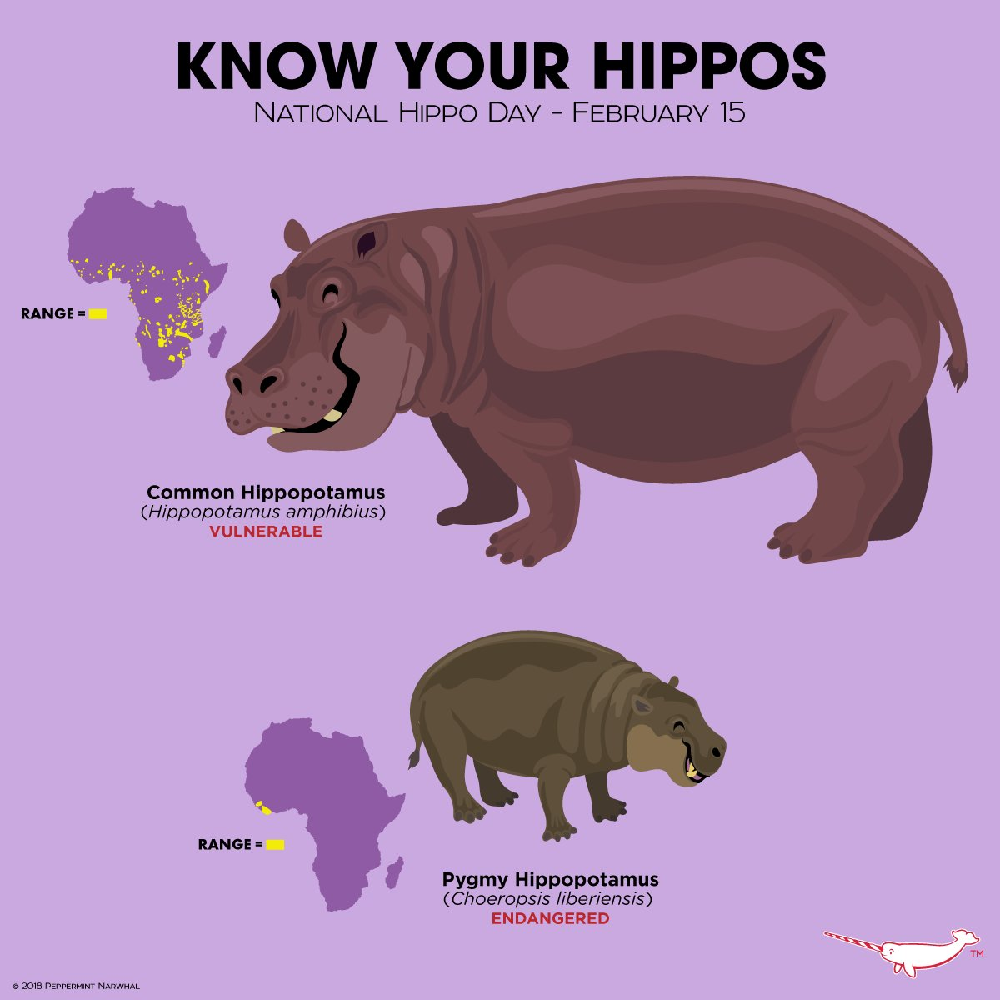
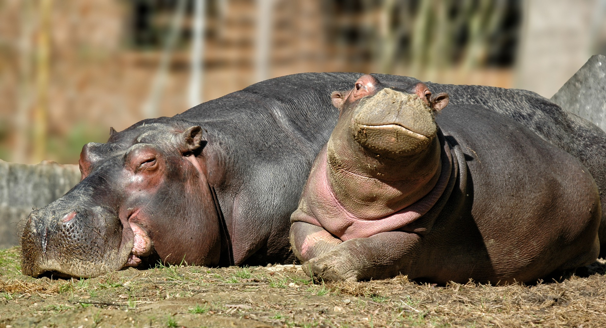

Índice
|
O que são hipopótamos?
Nativos da África, os hipopótamos são os terceiros maiores mamíferos terrestres, ficando atrás apenas dos elefantes e rinocerontes brancos.
Os hipopótamos são animais herbívoros, que se alimentam de plantas aquáticas e terrestres. Eles podem viver até 40 anos.
São animais muito agressivos, que atacam qualquer coisa que se aproxime deles. Eles são capazes de matar um leão, por exemplo.
A espécie mais conhecida é a do hipopótamo comum (ou Hippopotamus amphibius). Essa espécie pode medir de 1,5 a 1,65 metros. Já o hipopótamo pigmeu (ou Choeropsis liberiensis) é a menor espécie de hipopótamo - tendo, em média, 1,5 metros de comprimento.

Hipopótamo Comum
Nome Científico: Hippopotamus amphibius
Descrição: O hipopótamo-comum é um mamífero encontrado em várias regiões da África, sendo observado em rios na região das savanas, possuindo um hábito semiaquático. Pesa entre 1,5 e 4 toneladas e apresenta um tamanho entre 2 m e 4 m de comprimento, bem como uma altura de cerca de 1,6 m.

|
Hipopótamo Pigmeu
Nome Científico: Choeropsis liberiensis
Descrição: É muito semelhante ao Hipopótamo comum, mas tem proporcionalmente a cabeça menor e os membros mais compridos. A coloração da pele é mais escura, variando entre o cinzento e o castanho-escuro. Os 4 dedos também estão unidos por membranas. Os caninos inferiores são longos.
|
|